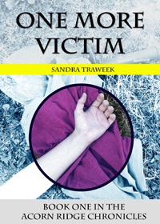
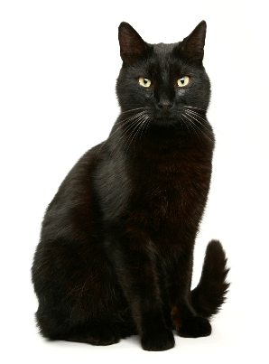
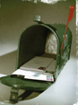

The Acorn Ridge Chronicles are about Adele Baker, a 60-something widow who is
struck by lightning and can now see dead people. In "One More Victim,"
Adele must convince her best friend, Mary Lou, that her powers are real, all the while
solving the murder of a young college girl before the killer strikes again.
A Word from Pantsy!

Thank you for visiting the official site of the "Acorn Ridge Chronicles."
The first book of the series, One More Victim, will be released soon!
And the second book is currently in the works. Look for it in late 2013.
My fearless human, Adele, is happy that you've wandered to over to our site.
Since book publishing is such a tough industry, she needs your help getting the word out.
If you liked the book, please spread the word by doing one of the following:
- Tell your friends.
- "Share" our site on Facebook.
- Ask is for a free copy for your local library.
- Ask your local bookstore to carry copies.
- Buy another copy of our books for your friends!
Thanks, and happy reading!

Join the mailing list!
Excited about future books from Acorn Ridge? Join the mailing list by sending an email to
Sandra@ AcornRidgeChronicles.com. Put the words "mailing list" in the subject line, and
we'll keep you informed of the latest events!
Preorder book two!
Book two, The Helen Bell Demon, is due Fall 2013. Preorder your book now and be the
first to receive a limited edition, autographed copy, shipped to your door before it's available
on Amazon!